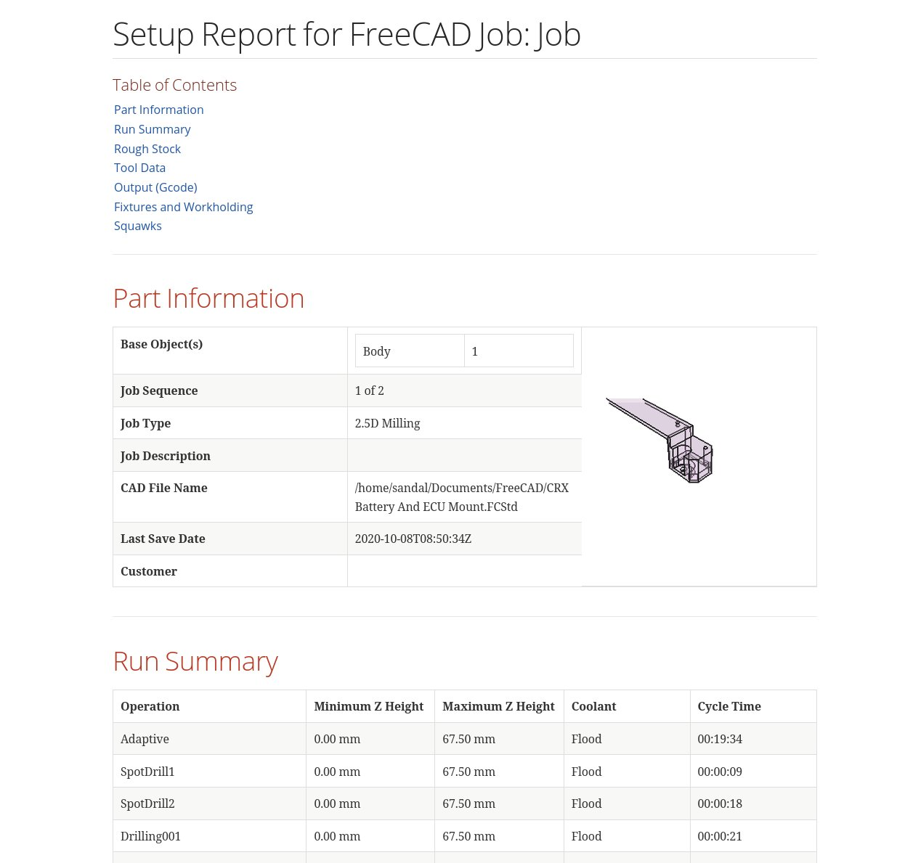

CAM Sanity
 CAM Sanity
CAM Sanity
- Menu location
-
; also in the Tree View context menu of a Job
- Workbenches
- Default shortcut
-
P S
- Introduced in version
-
0.19
- See also
Description
Many CAM users are hobbyists and DIYers. As such, they use their CNC machines to run G-code that they configured and generated themselves. That isn’t the case for most professional and commercial users. In professional shops, different people are responsible for creating the G-code and for running it on the machine.
Hobbyists usually run the G-code shortly after post-processing it and probably only once or twice. In a professional shop, proven G-code may be run many times over a long period.
One issue in that workflow is that many assumptions made by the programmer are not communicated by the G-code itself. For example, the G-code may call for a tool T3, but the file does not necessarily explain what tool that is, how the stock is oriented, or what setup is expected. Similar assumptions can apply to machine setup, tooling, material, part orientation, coolant, and work-holding.
Even if the G-code itself is correct, differences between the programmed setup and the actual machine setup can still lead to mistakes. Commercial shops often solve this by preparing a setup report or setup book for the machine operator.
The  CAM Sanity command (tooltip: Checks the CAM job for common errors; toolbar: Project Setup → Sanity Check) is used to generate this kind of setup-oriented information. The output is a standalone HTML report with embedded images that can be opened in a web browser.
CAM Sanity command (tooltip: Checks the CAM job for common errors; toolbar: Project Setup → Sanity Check) is used to generate this kind of setup-oriented information. The output is a standalone HTML report with embedded images that can be opened in a web browser.

Above: Example of a CAM Sanity generated report (from an older version; the current report is titled "Setup Report for CAM Job: <label>" and its fixtures section is titled "Fixtures")
About the Report
As much as possible, the content is FreeCAD-agnostic. The machine operator may never use FreeCAD, so FreeCAD- and CAM-specific terminology should be kept to a minimum. The report contains a table of contents and the sections Part Information, Run Summary, Rough Stock, Tool Data, Output (G-code), Fixtures and Squawks.
Part Information
Shows the CAD file name and last save date, the Customer (document Company field), the Job type, the Job’s sequence among the Jobs of the document, the Job description, an image of the Model(s) and the list of Models with their counts.
Run Summary
Lists the estimated total cycle time, the lowest and highest Z of the Job, and a table of every Operation with its Z range, cycle time and coolant mode. Inactive Operations are flagged with "(INACTIVE)"; Dressups are listed with their base Operation.
Rough Stock
Shows the Stock dimensions, the assigned stock material with its carbide and HSS surface speeds (if defined; see Assign Material on the Job’s Setup tab), and an image of the Stock.
Tool Data
One subsection per tool number with the Tool Bit description, shape, diameter, an image of the Tool Bit, horizontal feed, spindle speed and the Operations that use the Tool Controller. Manufacturer, URL, part number and inspection notes are reserved and currently empty.
Output (G-code)
Shows when the Job was last post-processed, the G-code file name, size and line count, whether the Job contains Stop operations (so the operator knows whether the machine run requires attention during execution), the Post-Processor and its arguments.
Fixtures
Lists the Work Offsets (Fixtures) and the output order, with an image showing the part datum relative to Stock and Model.
Squawks
This section lists warnings and errors detected by CAM Sanity. Each squawk has a type (Note, Tip, Caution, Warning) shown by an icon, a date, an operator and a note. Current checks: Job not yet post-processed; last G-code file missing; no stock material assigned; legacy tool; tool number used by several Tool Bits; Tool Controller without feed rate or spindle speed; unused Tool Controller; Job without Operations or Model. When a Machine is assigned, the machine-based Post-Processor can add its own checks. These items may or may not be actual problems, but they should be reviewed before post-processing or running the Job.
Usage
-
There are several ways to invoke the command:
-
Press the
 Sanity Check button.
Sanity Check button. -
Select the option from the menu.
-
Select Sanity Check from the context menu of the Job.
-
Use the keyboard shortcut: P then S.
-
-
In the Save Sanity Check Report dialog choose where to save the HTML file (defaults to the folder of the FreeCAD document).
-
The report is written and opened in the system’s default web browser; the path is also printed in the Report view.
Quick Validate
introduced in 26.3
The related command CAM QuickValidate (shortcut P V, not in the menus; run it with Gui.runCommand('CAM_QuickValidate')) runs the same checks without images or HTML and prints the squawks to the Report view.
Post Process dialog integration
introduced in 26.3
When post-processing with a Machine, the Post Process dialog runs the same checks and shows them on its Warnings tab (the tab label shows the count and a "(!)" marker when warnings or cautions exist). The Overview tab has a Generate HTML sanity report checkbox (in the current development version this option is collected but does not yet write a report).
Notes
-
The report is generated directly as HTML by FreeCAD. A separate AsciiDoc or Asciidoctor installation is not required.
-
The generated HTML file is intended to be easy to review, archive, or share together with the Job output.
-
Report images are captured from the 3D view and embedded directly in the generated HTML file, so a report generated in FreeCADCmd (without the GUI) has no images.
-
The target folder must exist.
-
Where applicable, report values are formatted for display using the current unit formatting.
-
Tool diameter and feed values are formatted for display, and spindle speed is shown with an
rpmsuffix. -
The report is a review aid. It does not replace visual Toolpath inspection, simulation, or machine-specific setup documentation.